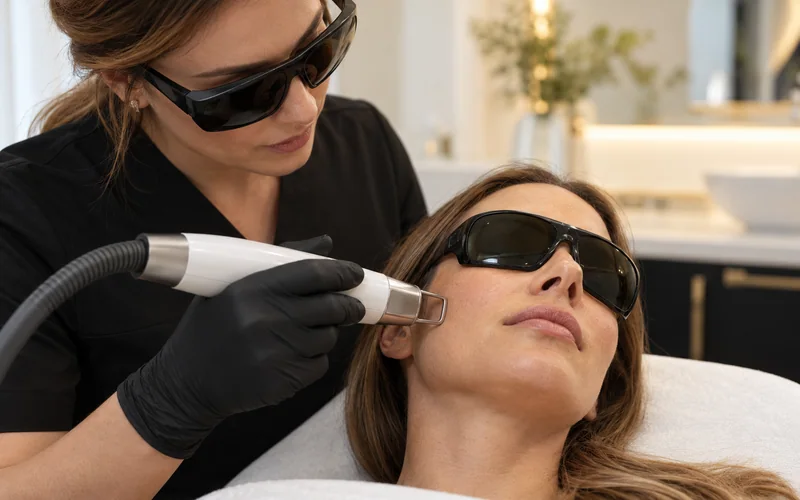
Imagem ilustrativaEstética facial
Laser Lavieen
Converse sobre a tecnologia Lavieen e um plano de cuidado para a sua pele.
Pele e rejuvenescimentoConhecer
Beleza que respeita a sua essência. Estética facial e corporal, fisioterapia estética e um cuidado individual no LED Office.
Conheça os procedimentos da Sthetic Center: toxina botulínica, preenchimento, laser Lavieen e mais. Seu plano começa por uma avaliação individual.

Imagem ilustrativaConverse sobre a tecnologia Lavieen e um plano de cuidado para a sua pele.
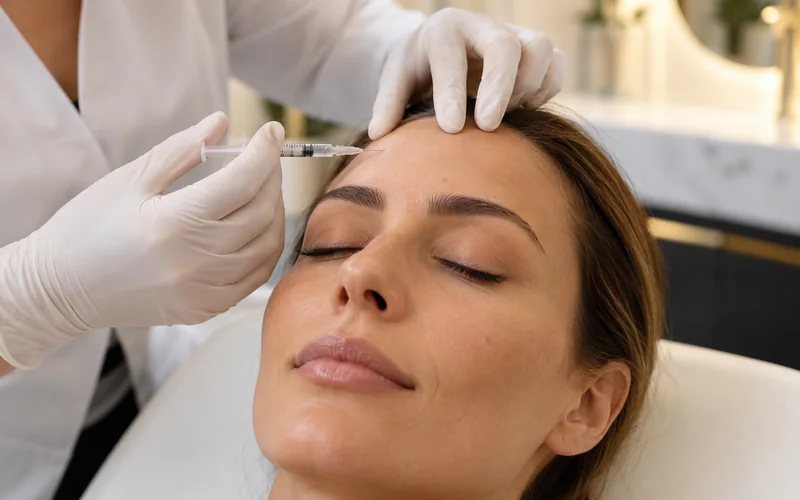
Imagem ilustrativaUm atendimento para conversar sobre linhas de expressão e naturalidade.
Explore opções de bioestimuladores e esclareça suas expectativas na avaliação.
 Imagem ilustrativa
Imagem ilustrativaUm momento para conversar sobre seu cuidado corporal e seu bem-estar.
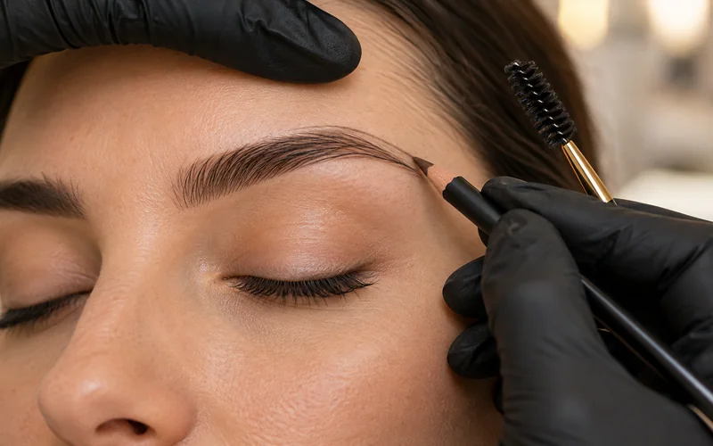
Imagem ilustrativaUm desenho pensado a partir das suas características e preferências.
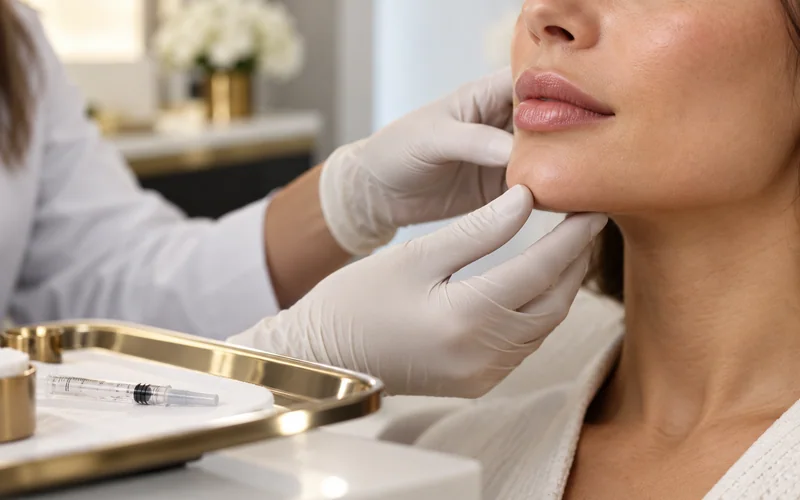
Imagem ilustrativaConverse sobre contorno, proporções e um planejamento que respeite sua identidade.
 Imagem ilustrativa
Imagem ilustrativaLeve suas dúvidas sobre skinbooster e PDRN para a avaliação individual.
Conheça as possibilidades do atendimento e os cuidados definidos para seu caso.
Explore o atendimento com ultrassom microfocado a partir de uma avaliação.
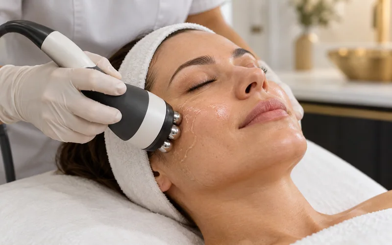
Imagem ilustrativaConverse com a equipe sobre o uso da tecnologia no seu plano de cuidado.
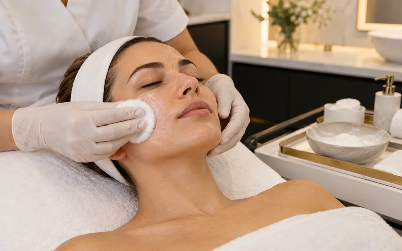
Imagem ilustrativaUm atendimento de cuidado da pele, com atenção às suas necessidades.
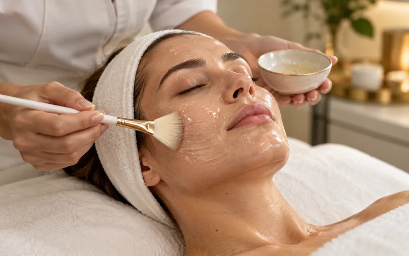
Imagem ilustrativaConverse sobre sua rotina e as possibilidades de cuidado facial na clínica.
Conheça o Hidra Gloss e converse sobre seu cuidado labial.
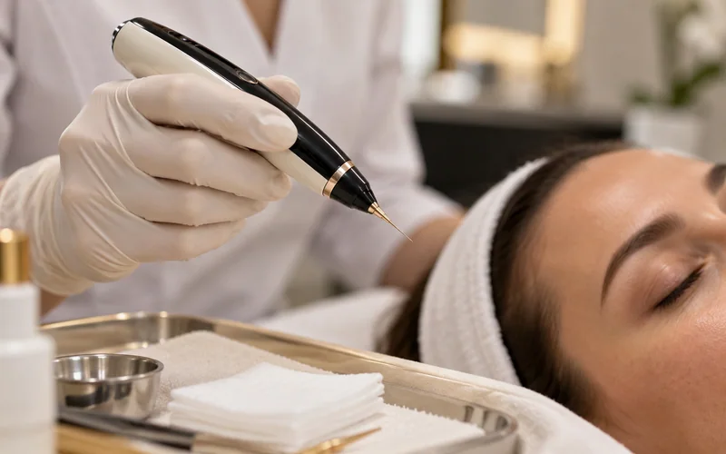
Imagem ilustrativaEsclareça suas dúvidas sobre indicação e cuidados com a profissional responsável.
Converse sobre seu objetivo e conheça o atendimento de massagem modeladora.
Um atendimento voltado ao cuidado corporal e ao seu momento de bem-estar.
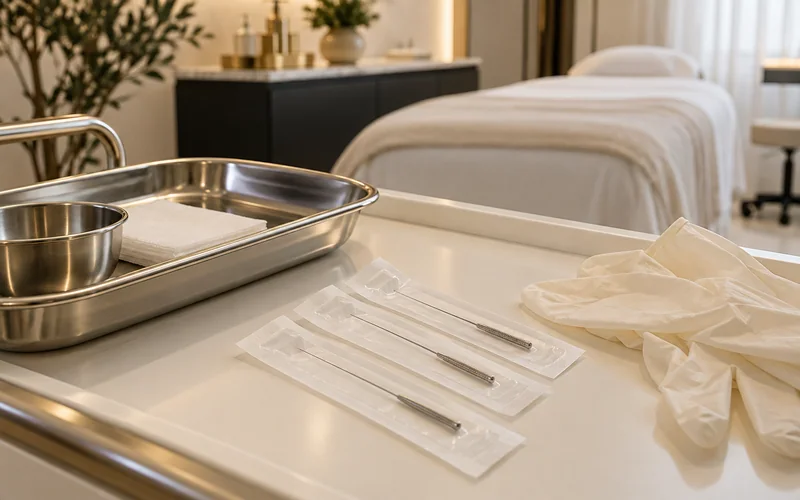
Imagem ilustrativaLeve suas queixas e dúvidas para uma avaliação fisioterapêutica individual.
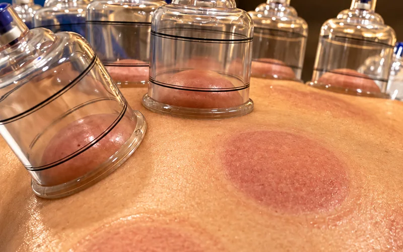
Imagem ilustrativaConheça essa possibilidade de terapia e converse sobre o seu caso.
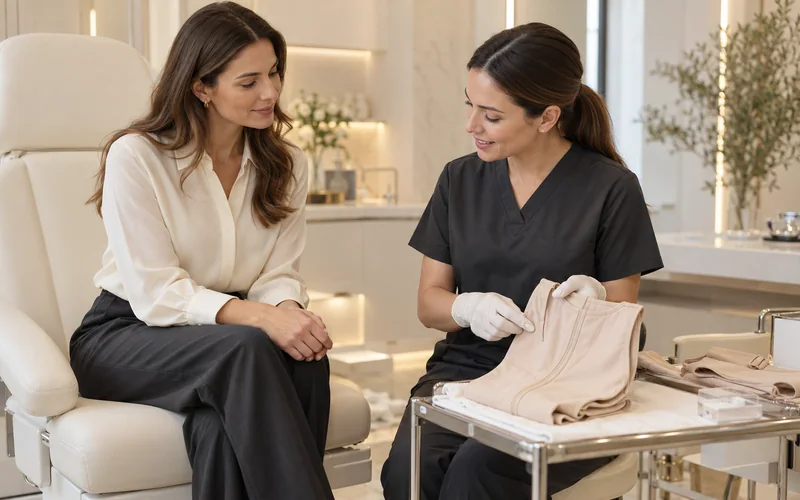
Imagem ilustrativaOrganize sua avaliação fisioterapêutica e converse sobre o acompanhamento após cirurgia.
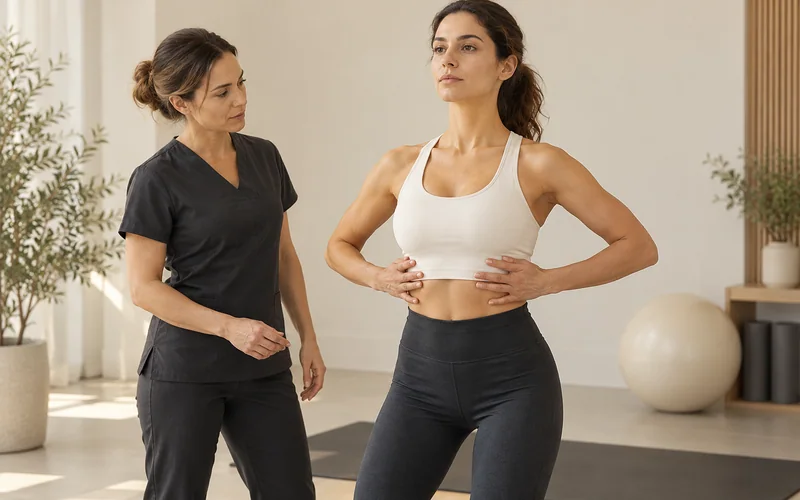
Imagem ilustrativaConheça o atendimento com LPF e converse com a equipe sobre seus objetivos.
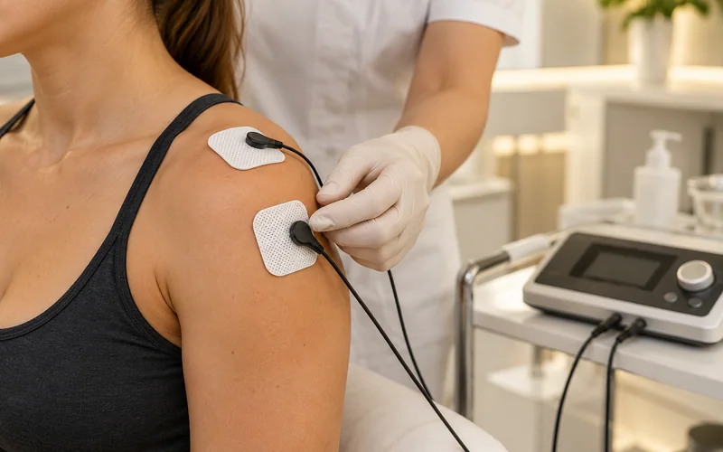
Imagem ilustrativaUma possibilidade a ser discutida no seu plano fisioterapêutico individual.
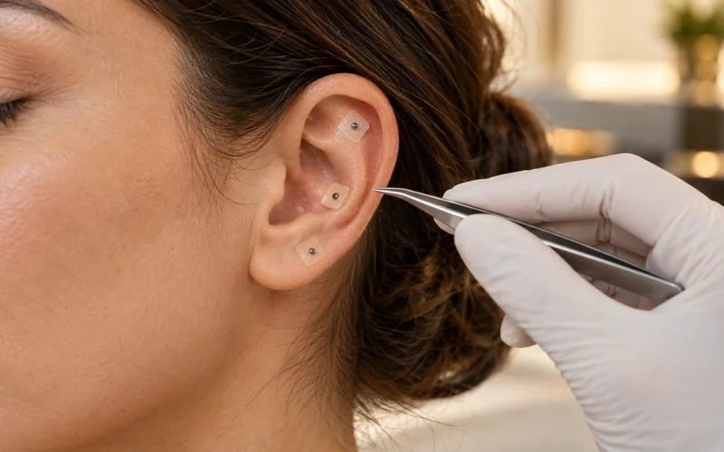
Imagem ilustrativaConverse sobre o atendimento de auriculoterapia e suas necessidades.
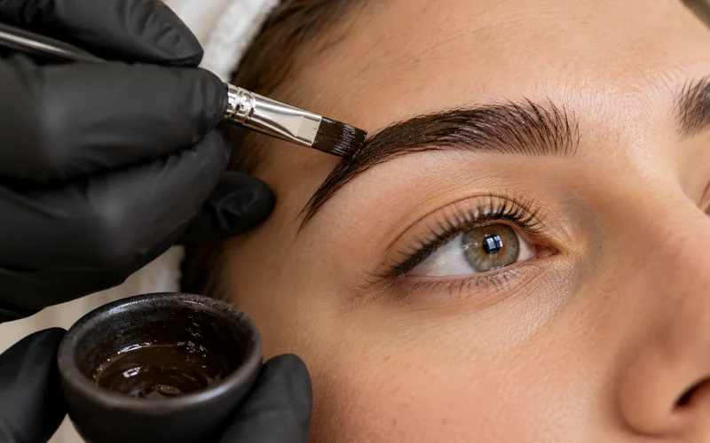
Imagem ilustrativaExplore possibilidades de desenho e acabamento para suas sobrancelhas.
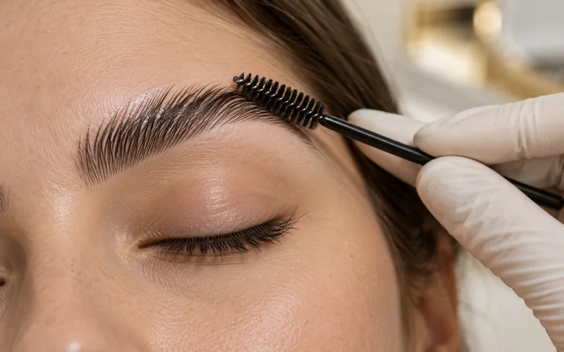
Imagem ilustrativaConverse sobre o estilo que você procura e conheça o brow lamination.
Imagens ilustrativas. O procedimento adequado é definido na avaliação profissional.
Cada pessoa tem uma história, uma rotina e uma forma de se sentir bem. Nosso cuidado começa por ouvir a sua.
Conheça quem cuida de vocêConhecer seus objetivos e avaliar seu caso é o ponto de partida. O plano de cuidado considera sua individualidade e a orientação da profissional responsável.
Escuta e planejamentoUm primeiro olhar para a Sthetic Center em Águas Claras. Da recepção aos consultórios, conheça os ambientes onde acontece o seu atendimento.
Planejar minha visita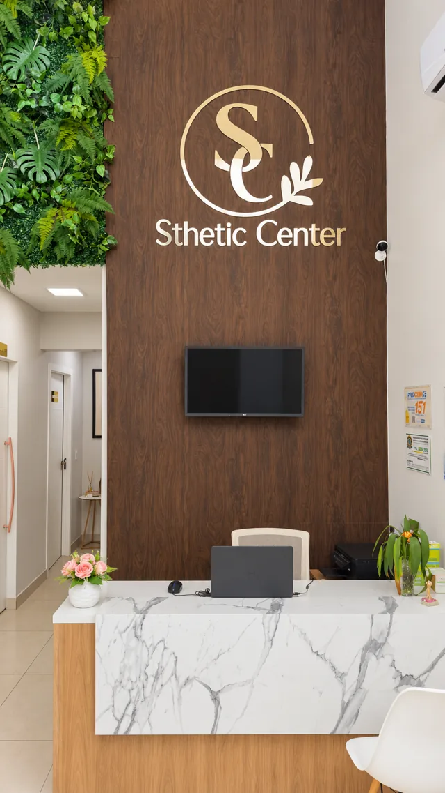
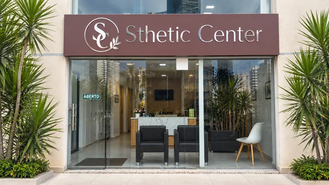
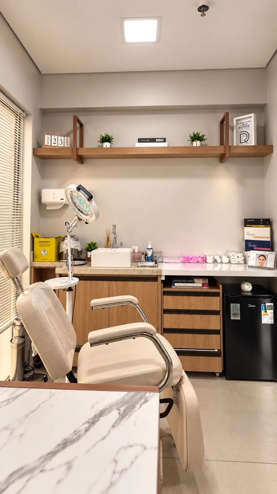
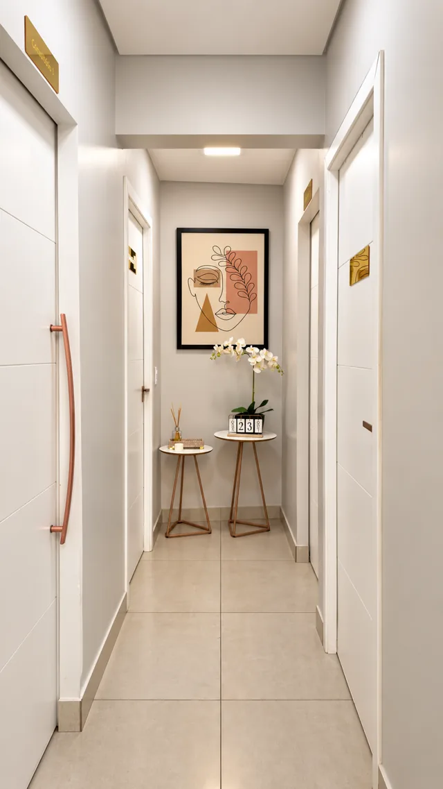
Fotos reais da nossa clínica, no LED Office.
Explore os detalhes antes da sua primeira visita.
A recepção apresenta a nossa identidade e é o ponto de chegada para o seu atendimento.
Conheça os consultórios e os ambientes que fazem parte da sua experiência na clínica.
Estamos no LED Office, bloco E, loja 26. Consulte o endereço completo e os horários na seção Sua visita.
Estética, fisioterapia e design com atenção à sua saúde, ao seu bem-estar e à sua individualidade.

Biomédica · CRBM 21978/DF · Responsável técnica
Atendimento em estética facial e corporal, com avaliação individual e planejamento voltado à naturalidade.
Agendar com Dra. Josy AraújoFisioterapeuta estética · CREFITO 203084-F
Cuidado corporal, terapias e acompanhamento fisioterapêutico, com avaliação individual e atenção ao pós-operatório.
Agendar com Dra. WaldireneDesigner de sobrancelhas
Um olhar atento ao desenho, às suas características e ao acabamento das sobrancelhas.
Estamos em Águas Claras, no LED Office.
Programe sua visita e fale com a nossa equipe.
Atendimento mediante agendamento.
Horário de Brasília. Confirme disponibilidade e horários em feriados com a equipe.
Planejar meu atendimentoVocê pode começar pela avaliação. Conte o que gostaria de cuidar e converse com a profissional sobre as possibilidades. Nosso guia ajuda a encontrar uma área de atendimento.
É o momento de conversar sobre seus objetivos, avaliar seu caso e esclarecer dúvidas. A profissional define com você o plano e explica cuidados, possibilidades e limitações.
Fale com a equipe pelo WhatsApp. Valores, condições de pagamento e horários são informados conforme o atendimento. O botão de WhatsApp facilita essa conversa.
O contato pelo site prepara uma mensagem para o WhatsApp. A data e o horário ficam confirmados depois que você conversar com a equipe.
A indicação depende da avaliação individual. A profissional responsável vai conversar com você sobre o que é adequado ao seu caso. Resultados e evolução variam de pessoa para pessoa.
Estamos no LED Office: QS 1, Rua 210, lotes 34 e 36, bloco E, loja 26, Águas Claras, Brasília — DF. Você pode abrir a localização ou copiar o endereço na seção Sua visita.
Ver endereço e horáriosFale pelo WhatsApp (61) 99611-3976. Conte seu objetivo e a equipe organiza sua avaliação em estética facial, corporal ou fisioterapia estética. Atendemos de segunda a sexta, das 9h às 19h, e sábado, das 9h às 12h, mediante agendamento.
Fale diretamente com a Sthetic Center pelo WhatsApp. Nossa equipe orienta você sobre o atendimento e organiza sua avaliação em Águas Claras.
(61) 99611-3976 WHATSAPP DA CLÍNICA@sthetic.centerrConte o que procura na conversa com a equipe. Consultamos a disponibilidade e ajudamos você a escolher o próximo passo.
Iniciar conversa no WhatsAppOnde estamosLED Office · Bloco E, loja 26 · Águas Claras
Horários habituaisSeg–sex: 9h–19h · Sábado: 9h–12h
A equipe confirma o horário e o agendamento durante a conversa.